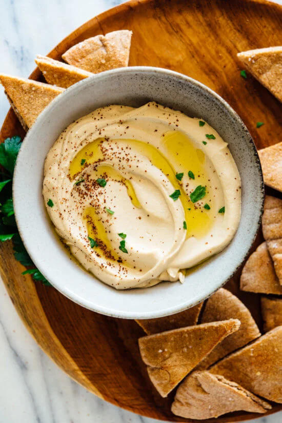

Hummus

Description
Learn how to make the best homemade hummus! It’s creamy, dreamy and light. This hummus recipe is easy to make—no peeling chickpeas or overnight soak required. Recipe yields about 2 cups.
Ingredients
- 1 can (15 ounces) chickpeas, rinsed and drained, or 1 ½ cups cooked chickpeas
- ½ teaspoon baking soda (if you’re using canned chickpeas)
- cup lemon juice (from 1 ½ to 2 lemons), more to taste
- 1 medium-to-large clove garlic, roughly chopped
- ½ teaspoon fine sea salt, to taste
- ½ cup tahini
- 2 to 4 tablespoons ice water, more as needed
- ½ teaspoon ground cumin
- 1 tablespoon extra-virgin olive oil
- Any of the following garnishes: drizzle of olive oil or zhoug sauce, sprinkle of ground sumac or paprika, chopped fresh parsley
Steps
- Place the chickpeas in a medium saucepan and add the baking soda. Cover the chickpeas by several inches of water, then bring the mixture to a boil over high heat. Continue boiling, reducing heat if necessary to prevent overflow, for about 20 minutes, or until the chickpeas look bloated, their skins are falling off, and they’re quite soft. In a fine-mesh strainer, drain the chickpeas and run cool water over them for about 30 seconds. Set aside (no need to peel the chickpeas for this recipe!).
- Meanwhile, in a food processor or high-powered blender, combine the lemon juice, garlic and salt. Process until the garlic is very finely chopped, then let the mixture rest so the garlic flavor can mellow, ideally 10 minutes or longer.
- Add the tahini to the food processor and blend until the mixture is thick and creamy, stopping to scrape down any tahini stuck to the sides and bottom of the processor as necessary.
- While running the food processor, drizzle in 2 tablespoons ice water. Scrape down the food processor, and blend until the mixture is ultra smooth, pale and creamy. (If your tahini was extra-thick to begin with, you might need to add 1 to 2 tablespoons more ice water.)
- Add the cumin and the drained, over-cooked chickpeas to the food processor. While blending, drizzle in the olive oil. Blend until the mixture is super smooth, scraping down the sides of the processor as necessary, about 2 minutes. Add more ice water by the tablespoon if necessary to achieve a super creamy texture.
- Taste, and adjust as necessary—I almost always add another ¼ teaspoon salt for more overall flavor and another tablespoon of lemon juice for extra zing.
- Scrape the hummus into a serving bowl or platter, and use a spoon to create nice swooshes on top. Top with garnishes of your choice, and serve. Leftover hummus keeps well in the refrigerator, covered, for up to 1 week.